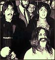

De entre las muchas perlas (en los diversos sentidos...) que encontré en los números de Parte de guerra, saco esta:
Cuenta H. Fenoglio (militante activo de izquierda en el '70, alias Yuyo) la historia de Ismael Viñas, (hermano de David Viñas), destacado intelectual revolucionario de aquellos tiempos que a mediados del 1976 "se exilió" a Israel.
Las comillas van porque en realidad el tipo se rajó sin dar aviso a los suyos, y llevándose plata de la organización. Al menos, esto cuenta Fenoglio. Quien también relata el momento en que, avergonzado, él debe informar esto a un compañero amigo, obrero de la construcción:
-
Después de dar muchas vueltas se lo dije. No sé qué cara habré puesto,
pero sí recuerdo muy bien lo que él me dijo.
Me dijo así: "Yuyo, no te hagás tanta mala sangre; si esto pasa en la izquierda, imaginate lo que debe pasar en la derecha ! "
Finalmente (un sábado a la tarde libre!) me di una vuelta por Puan (facultad de Filosofía) y me encontré con el "taller de pensamiento" que organiza la gente de " Parte de Guerra", y llegué tarde, pero no tanto como para no suscribirme. Y acá estoy, con seis números de la revista, ya leídos muy por arriba y por releer mejor.
De lo mejorcito que he visto de la izquierda intelectual; y este Fenoglio es un tipo interesante, realmente, y a pesar de todo.
Me contaba que con un pastor de la Iglesia de Dinamarca se pusieron a investigar sobre Kierkegaard, y hasta a aprender danés para traducirlo... (!) Y están dando un curso sobre K. (y sobre "Las obras del amor", uno de sus sermones religiosos) en esa iglesia dinamarquesa, en Carlos Calvo al 200 (San Telmo), los viernes a las 19.
Y en el último número de la revista hay un texto de Kierkegaard (de "El instante"), inédito en castellano.
Hace un ratito, en el supermercado; la madre, con el chico en el changuito, en la góndola de los lácteos; el chico pregunta:
- Mamá, ¿ voy a poder comer el yogur antes de comer ?
Link de el Toro:
La noticia (suena a broma, pero parece que es en serio) dice:
-

El Maharishi Mahesh Yogi, quien fue el guía espiritual de los Beatles, dijo en un mensaje dirigido
a los estadounidenses nerviosos por los acontecimientos del pasado 11 de septiembre
que él podía eliminar el terrorismo mundial
con amor, y que para ello necesitaría 1.000 millones de dólares.
...
[esa plata haría falta para ] preparar a 40.000 mediadores expertos o "Vedic Pandits".
Según su teoría, estos generarían buenas vibraciones, las suficientes como para salvar al mundo
"Confío en que la India sea el faro para el conocimiento total ... desde allí total iluminará a toda la familia de naciones... lo que generará una poderosa influencia de paz que se propagaría por todo el mundo y neutralizaría el estrés, el odio y las tensiones que fomentan el terrorismo y la guerra actualmente", manifestó.
Ayer estuvo caído Blogger casi todo el día. Y traté de meter un cartelito de advertencia manualmente (por ftp directo) y el firewall de mi empresa me jugó una mala pasada: el archivo principal (index.html) quedó truncado con lo cual esta página se vio durante unos minutos en blanco. Korochi comentó:
-
Fotos veladas
En este momento, el weblog Fotos del Apocalipsis aparece totalmente en blanco.
Por fin, estamos completamente de acuerdo.
Una, sobre lo de "estar de acuerdo", inconformismos juveniles, ideologías reformistas/revolucionarias, adoctrinamiento de masas, ... y acaso lo que Dolina llamaba "el pensamiento oficial del mundo"....pero eso quedará para otra vez.
Otra: se me ocurre ahora, ya con la página en su estado normal, que lo de fotos veladas (del apocalipsis) no anda muy descaminado para calificar este weblog... tomando -eso sí- el adjetivo en la acepción primaria (no fotográfica).
Un lector me advierte de una metida de pata: estoy confundiendo filósofos: a Alejandro Rozitchner con León Rozitchner.
Este... claro.... queríamos ver si teníamos lectores mínimamente cultos y atentos. Gracias.
El mismo lector termina su breve, gentil y anónimo mensaje con este comentario sobre este weblog (perdón, pero no pude resistir):
- En general, es interesante detectar
una lucha permanente contra el demonio de la soberbia, y comprobar cómo, de
vez en cuando, consigue derrotarlo.
- Tendencia a difundir el mal hacia afuera: también la tengo.
Los seres y las cosas no me son suficientemente sagrados.
Ojalá no manchara yo nada, aunque estuviera completamente convertida en fango.
No manchar nada, ni aun en mi pensamiento. Ni siquiera en mis peores momentos destruiría una estatua griega o un fresco de Giotto.
¿Por qué, pues, otra cosa?
¿Por qué, por ejemplo, un instante de la vida de un ser humano, que podría ser feliz por un momento?
- suele darse el caso en que, frente una serie
de conceptos de generalidad descendiente, como:
cuerpo viviente - animal - animal no racional -
vertebrado - mamífero - canino - perro - galgo, etc
(y aún Colita o Patán), ignoramos mediante cuál concepto
(canino, perro, galgo ... ?) nos es indicada la
esencia del perro Patán. Sin embargo, en la serie
de conceptos dichos, o en los que se pudiera
intercalar, debe haber uno que designe esa esencia.
No sé si será culpa de mi mente, o de mi formación ... o de Maritain, o de quién sabe qué... Igual, me resulta un poco triste.
Me digo, como para animarme, que esto no me ocurre cuando leo al mismo Santo Tomás -la Suma jamás me inspira repulsa intelectual, al contrario-; pero me respondo que acaso eso se deba a que a él no lo entiendo y a Maritain sí...
La Nación, no conforme con cretinizar diariamente a los adultos, sueña con extender su manto de idiotez hasta el jardín de infantes. Y confraternizando con la Facultad de Filosofía de la UBA, (y con tipos tan poco "conservadores" como Rozitchner) se entusiasma con esta gran idea: " la filosofía puede enseñar a pensar a los más chicos" .
Por supuesto, se trata de hacer preguntas, no de buscar respuestas (eso podría traernos dolores de cabeza; y la verdad no existe).
Entre los "objetivos" : que sean más tolerantes, acepten que hay puntos de vista diferentes . Al ir construyendo su pensamiento, todo chico hace filosofía o es, en parte,un filósofo", sostiene Alejandro Rozitchner.
Y cuando seas grande, acaso llegarás a ser un filósofo enterito; y tan tolerante y abierto a puntos de vistas diferentes como el mismo Rozitchner. Qué lindo.
"Sé muy bien lo que es fascista. Infobae es un sitio fascista.", me escribe roxanova.
Quod erat demonstrandum.
PD: Otro, de argentino standard:
-
La empresa donde trabajo es re careta, muy milica y oCviamente llena de fachos. Por lo que fue muy hermoso para mi, venir el sábado y hacer mierda la alfombra con los carritos de la mudanza. Pero mejor fue venir el domingo siguiente en bermudas y all star (hacía calor), poner Led Zeppelin III al taco y correr por encima de los escritorios.
Fue una pequeña venganza personal.
Probablemente , la peor noticia del año; Clarín le dedica cuatro párrafos casi invisibles en la edición de hoy; en la "conservadora" La Nación no encuentro una palabra.
El aborto "legal, seguro y accesible a todos" fue sancionado ayer como un derecho
(¿derecho de quién?) por el Parlamento europeo.
Por si alguien tuviera algún problema en tragar esta noticia, Clarín da dos traguitos de agua para
arrempujarlas: 1. los que se opusieron a la ley eran "la derecha" (ergo...) 2. dice que el voto "no vincula
a los gobiernos europeos. En la práctica, se trata de una recomendación."
Es precisamente al revés: en los papeles es un "derecho": en la práctica tiene fuerza legal. Ningún gobierno europeo puede (en la práctica, precisamente) sancionar ninguna ley que se oponga a algo que el parlamento ha sancionado como un derecho.
Estuve mirando recién el sitio cine nacional (en rigor: cine argentino).
No me animaría a decir que es un buen sitio, lo miré muy por arriba. Pero se ve bien, en contenidos, estética y usabilidad (guau! un buscador útil y que funciona!). Y está actualizado.
Cosa grata, en estos tiempos de brazos caídos...
Vuelvo a recomendar la edición (barata, en rústica) de la Biblia de Jerusalén, de Editorial Alianza, una de las mejores compras que he hecho en la Feria del Libro.
No tengo mucha cultura bíblica, y la leo menos de lo que acaso debería...
El otro día me estaba (sin mucho convencimiento) acusando a mí mismo
por eso; y me defendía (sin mucho convencimiento) a mí mismo, "argumentando"
cosas como:
_ Sí, sí... es la Palabra de Dios, sí.. es cosa "revelada", sí,... "la verdad sin errores"
,sí... pero de todas
maneras habría que ponerse a hacer distinciones y aclaraciones sobre qué significa
eso, en qué sentido ...
Después de todo, es todo tan discutible ... no se ponen de acuerdo los mismos
teólogos... además, qué querés que te diga.. .hay cosas que no estoy seguro
de cómo hay que leerlas, hay cosas que francamente me aburren, y hay partes
que no tengo idea de qué "provecho" pueden resultar a un cristiano de hoy...
Verdaderamente ¿te parece que no hago bien al preferir (re)leer
a Dostoyevsky, Platón, Simone Weil , etc, en lugar de las batallas
de Josué contra los amalecitas, las amenzas de los profetas contra
los egipcios y los asirios, los censos y los árboles genealógicos,
las recetas de cuántas palomas hay
que ofrendar o de cuántos codos debe medir la cortina de no sé que
cosa ? Vamos!
Y para ejemplificar, abro la Biblia; tomemos, por ejemplo, uno de esos
libros "legalistas"... a ver... los últimos del Pentateuco ? abro
el de los "Números", esperando encontrar una página
de esas "inútiles".
Casualidad o no: me topo con cosas que, aunque ya había leído,
ahora me resultan sorprendentente interesantes.
Van dos:
-
Ahora bien, Moisés era un hombre muy humilde. No había nadie más humilde que él en la faz de la tierra.
-
Moisés levantó su mano y golpeó dos veces la roca con su varilla. Entonces brotó agua en abundancia y tuvieron para beber la comunidad y su ganado.
Pero Yavé dijo a Moisés y Aarón: "¡Ustedes no han tenido confianza en mí! Ya que no me glorificaron ante los Israelitas, no harán entrar a esta comunidad en la tierra que les daré".
Ahora bien: ¿ cuál fue la culpa de Moisés ? ¿Por qué Dios les dice "no confiaron en mí"? Eso se pregunta el comentarista de la Biblia de Jerusalén; y responde que probablemente se trata del abandono de la campaña contra Canaán. Es muy raro; que yo sepa, la interpretación que yo conocía es que la infidelidad se relaciona con el versículo anterior, con el hecho de que Moisés golpeó dos veces la roca con su varilla, lo cual denotaría una falta de fe...
No me convence demasiado, así que me gustó que este comentarista apuntara para otro lado. Pero también es cierto que varias veces se menciona más adelante la "infidelidad de Moisés en las aguas de Meribá"... ¿Será una falsa pista eso de creer que la infidelidad fue al hacer surgir esas aguas ? ¿ será que es sólo una indicación geográfica, no relacionada con el milagro de Moisés ? Vaya a saber...
Y para terminar: no se trata de lo mismo, de ninguna manera, pero me recuerda esto:
-
Intenté salvar la Comarca y la he salvado; pero no para mí. Así suele ocurrir, Sam, cuando las cosas están en
peligro: alguien tiene que renunciar a ellas, perderlas, para que otros las conserven.
No sé por qué, ni cómo, ni cuándo (un par de años?) empezó a ponerse de moda entre los muchachos de estos pagos el uso del rosario como parte de la indumentaria del joven reo... lo he visto en chico/as onda bailantera y onda punk ... suele ser de color blanco, de esos de plástico, y exhibirse con bastante ostentación.
Es raro... supongo que parte del encanto de la cosa es esa especie
de gusto por lo bizarro/kitch o qué se yo... así como uno ve por ahí
un altar/imagen del Sagrado Corazón (y de los más grotescos)
en un video de la MTV...
La alusión religiosa parece bastante ausente... ni a favor ni en contra,
ni siquiera como amuleto, según parece.
No sé... me llama la atención. No me cae bien ni mal, pero me da curiosidad...
será una moda argentina o qué ?
Cierto es que por acá era y sigue siendo muy frecuente encontrar
el rosario colgando del espejito retrovisor de los taxis, pero
a modo de amuleto, creo; aquello es otra cosa.
Un sacerdote argentino disidente "ordena" sacerdotes a siete mujeres en Alemania.
"Cristales" titulan a un post en el que se mencionan las distintas cifras que dan distintos medios sobre una "marcha de repudio"... Lo de "cristales" es seguramente una alusión al "cristal con que se mira".
A mí me resulta más interesante el cristal ideológico que hace ver a los medios argentinos según esta categorización:
Muy típico del pensamiento de las mayorías, por otra parte (de otra manera, no lo citaría): esa estrechez ideológica que llega al punto de confundir a los enemigos, cuando dos segundos de reflexión (o una página de Historia) deberían bastar para darse cuenta de lo risible que es llamar "fascista" a un pro-yanqui.
Pero a las pasiones colectivas (los opios de nuestra juventud) les conviene un enemigo común: ellos son los malos...
Una de las típicamente sesudas "notas de opinión" de La Nación. Empieza así:
-
La penetración de las tecnologías de la información y las comunicaciones en todos los campos de
la existencia humana está conduciendo a cambios profundos en la manera en que las personas
interactúan dentro de la sociedad y la forma en que las sociedades involucran a los individuos en los procesos evolutivos.
-
esta otra sociedad argentina tiene nuevas exigencias.
Quiere seguir comunicada e, intuitivamente, continuar con la construcción de un nodo que agregue valor
...
La percepción del gobierno electrónico como un proceso de reforma, y no como la automatización de las operaciones del gobierno, contribuirá a la evolución hacia una sociedad de la información que potenciará y enriquecerá la vida de los ciudadanos por la posibilidad de acceso a la información y el conocimiento, y a las oportunidades sociales, económicas y políticas que ofrece. ...
Entre estos y los de página 12... pobre país.
Qué torpe, qué inelegante es esa jactancia (aunque no la sea, siempre suena a eso; y acaso en alguna medida siempre lo sea) de evocar la posición/pensamiento/acción del "enemigo" como algo que uno ya vivió, como algo de lo que uno está de vuelta.
- Yo también hacía/decía/creía esas cosas, años atrás ...
- Con un esfuerzo sobrehumano, Rick dejó pasar la frase sin responder.
Le pareció mejor callarse. Aún cuando fuera mortificante que su
interlocutor se anotase todos los tantos del debate, era
preferible eso a cerrar con una réplica mordaz e hiriente todos
los caminos que pudiesen conducir a aplacarlo.
Además, no se le ocurrió en aquel momento ninguna réplica mordaz e hiriente.
-
... Paula, Lucas y Federico descubrirán que sus vidas nunca se construyeron a partir de sus
deseos y necesidades más íntimas.
El erotismo, presente de diferentes maneras, se manifiesta como algo amenazador y, a veces, transmitiendo la sensación de que el contacto de los cuerpos puede convertirse en un modo de comunicación verdadera.